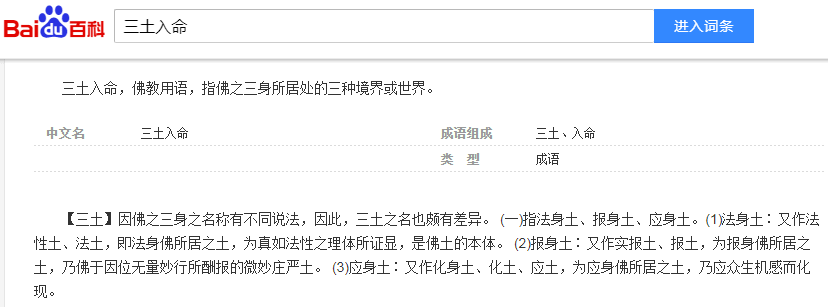
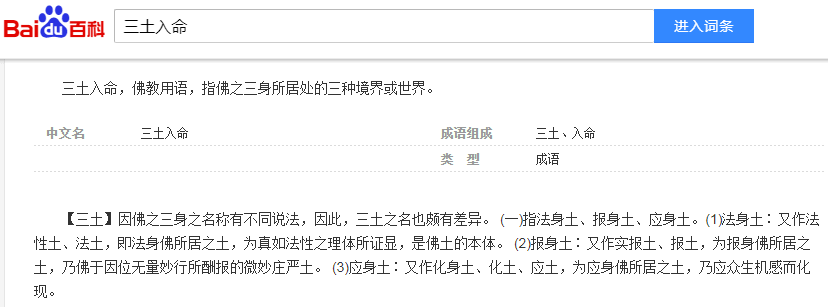

洗完澡了精神抖擞容光焕发，上网乱转还是没发现什么色目含量甚高的重要情报，也没找到能转移九点四亿傻哔视线的划时代娱乐新闻，还剩一天放假，估计除百分之八点八高学历精英以外的记忆只有七秒钟的人民群众各个都在翘首以待，纷纷讨论几个月前的同样话题「持币过节还是持股过节」。
所以，先把《设定集》第二辑《警惕月球势力打雌权主义牌！》草稿的第一个片段《二狗舔三仕》的第一个场景写出来上传，然后写注释。
校门口「闹事」的老头，原型就是北京师范大学附属女子中学原副校长卞仲耘的丈夫王晶垚，百度提供的通稿如下：

而影射为文艺形象，需要一点文字游戏：
 

险些按捺不住以《三日当空三土入命》「这八个字」当标题的冲动。
而斯特拉斯堡国家行政学院保安的形象，来自公开新闻：
一言以蔽之，「言必信行必果硁硁然」的孤苦伶仃可怜废柴草根文盲矬胖老穷光棍汉精神病扑街写手不入流码农数学渣宅男黑客活雷锋烟枪酒鬼缩卵怂货窝囊废坚持「无一字无来历」职业习惯不动摇。
情报：


涉及南棒的热闹还需要后续情报，但是这些素材已经可以化用为剧情了，就引用时事新闻伊朗核科学家穆赫森·法赫里扎德被暗杀的背景。
简单说，在一个父权社会当中「父要子死不得不死」，同理可证，母系社会则是「母要子死不得不死」，比如《武则天和她的亲人们》之类典故。
于是碰上「豪门恩怨伦理剧」尤其是「嫡庶之争」「父母偏心」的情况下，如同华盛顿「庶子」下放农场卖苦力那样扔到孤儿院成长然后参加战略工程的「爸爸最不喜欢的儿子」，因为妨碍了「妈妈最爱的儿子」继承家业，被忠心耿耿的家奴执行家法了，然后大穆夫提出来双手一摊「清官难断家务事嘛」表示无能为力，大事化小小事化了罚酒三杯下不为例下次还敢，主席台前三排为了面子，硬说是以色列干的。
出门酗酒之前，把这个脑洞演绎为片段梗概《谁是最可爱的儿子》。如是我闻的典故是美帝灯塔国纽约州州长哥哥安德鲁·科莫与CNN主播弟弟克里斯·科莫斗嘴“顺便告诉你，妈妈说我是她最喜欢的儿子，好消息是你排第二”。而曰若稽古的典故则是大救星和刘少奇的长子都死于非命，前者按照「父权社会」套路理解，后者按照「母系社会」理解为王光美给刘源铺路。于是《知名育儿博主「岸英他爹」身份之谜》的悬念可以留到现在了，大救星最喜欢的儿子的儿子的儿子，应该不是傻儿子生的超胖儿子生的儿子。
未完待续